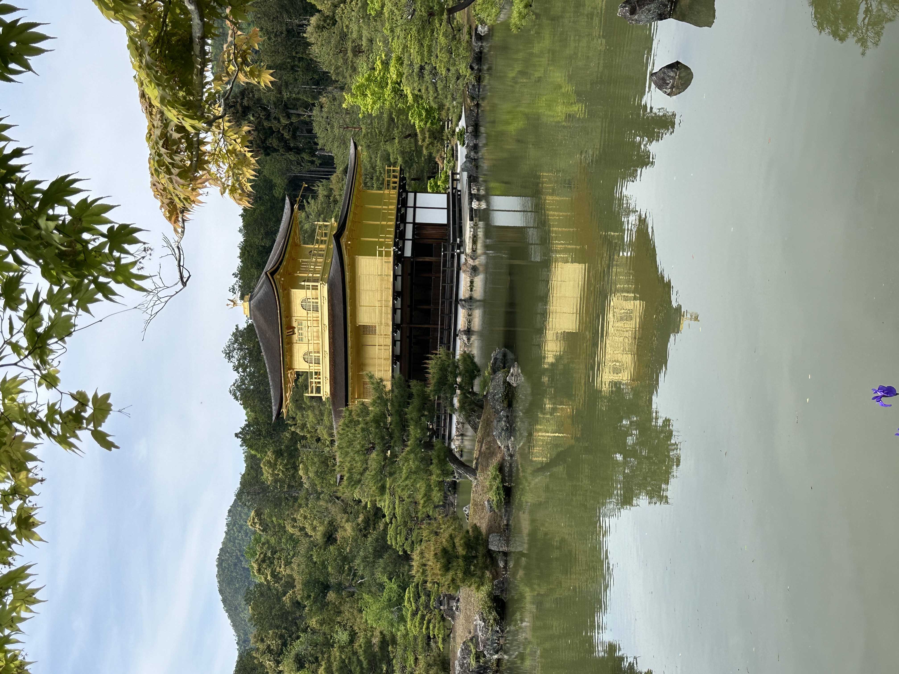

はじめに
日本、京都の静かな風景の中に佇む金閣寺（正式名称：鹿苑寺）は、日本建築と文化の優雅さと静けさを象徴する存在です。このブログでは、この象徴的な禅寺の歴史的意義、建築の美しさ、そしてその静かな環境について探ります。
歴史的意義
金閣寺は、1397年に将軍足利義満の隠居所として建てられ、彼の死後に禅寺に改装されました。この寺院は何度も再建され、1950年に放火で焼失した後、現在の建物は1955年に完成しました。金閣寺は、歴史的な背景と共に、日本の中世期の文化と政治の象徴として重要な位置を占めています。
建築の美しさ
金閣寺は、上二層が全面金箔で覆われた美しい建物で、周囲の緑と池の鏡のような反射との対比が見事です。三層の建物は、以下の異なる建築様式を取り入れています：
- 一層目 は、平安時代の宮殿建築である寝殿造です。
- 二層目 は、武家住宅の様式である武家造です。
- 三層目 は、中国の禅堂の様式で建てられ、禅仏教の本質を体現しています。
静かな環境
寺院は、美しい庭園に囲まれており、どの角度から見ても金閣寺の絵のような風景を楽しむことができます。鏡湖池（きょうこち）は、金色に輝く建物を鏡のように映し出し、訪れる人々を魅了する幻想的な景色を作り出しています。
訪問者は、庭園を散策しながら、伝統的な日本の造園術が施された植物や風景を楽しむことができます。小道は様々なビューポイントに続き、それぞれが寺院とその穏やかな環境のユニークな視点を提供します。

訪問者情報
金閣寺は一年中訪れることができ、日常の喧騒から離れて静けさを楽しむことができます。特に、周囲の植物が鮮やかな色を加える秋と春の季節が訪問のベストシーズンです。
- 所在地：京都府京都市北区金閣寺町1
- 開館時間：午前9時 - 午後5時
- 入場料：大人400円、子供300円
結論
金閣寺への訪問は、単なる観光以上のものです。日本文化の静けさと精神性に浸る体験です。息をのむような美しさと静かな環境を持つ金閣寺は、日本の最も大切なランドマークの一つであり、訪れる人々にその永遠の魅力を示します。
京都への旅行を計画されている方には、金閣寺は見逃せない目的地です。素晴らしい景色だけでなく、深い平和と反省の感覚も約束されます。